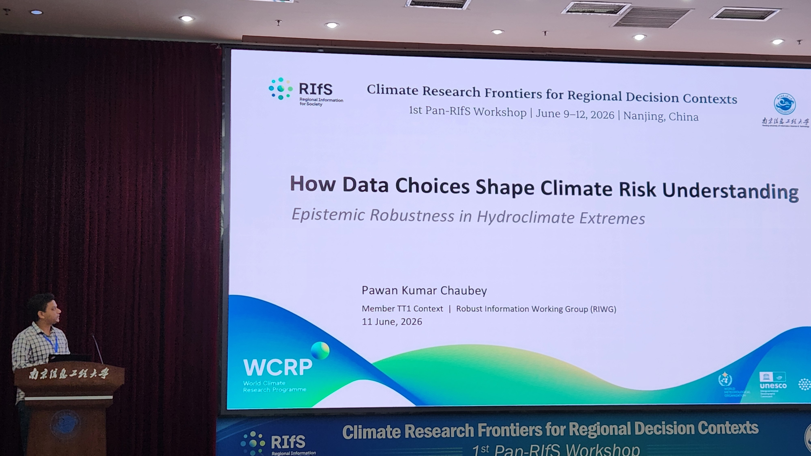
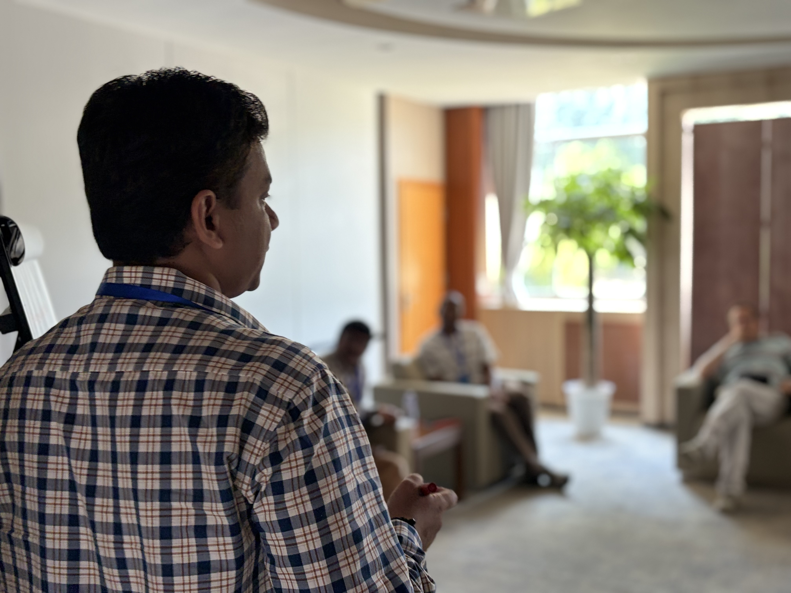
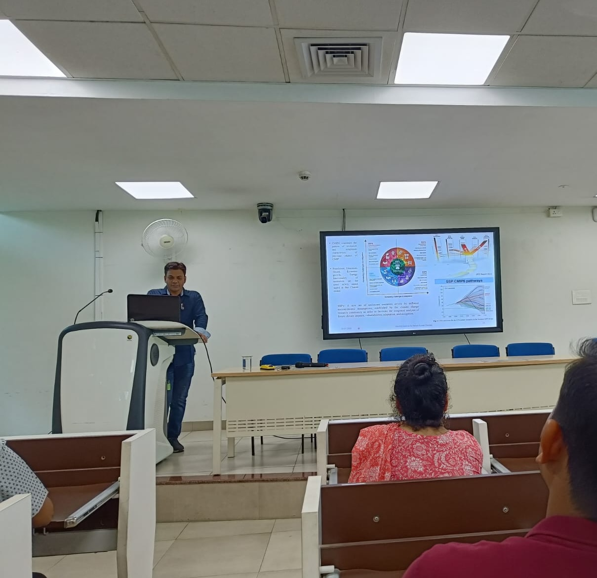
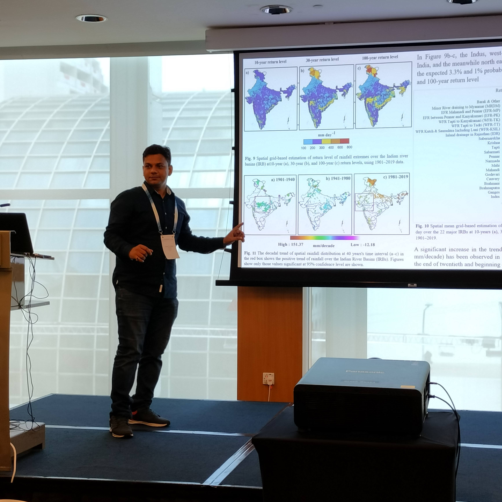
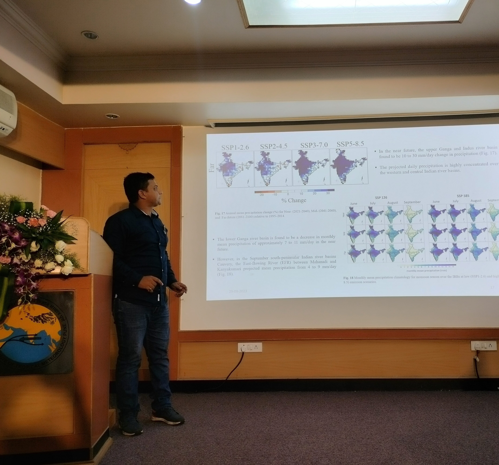
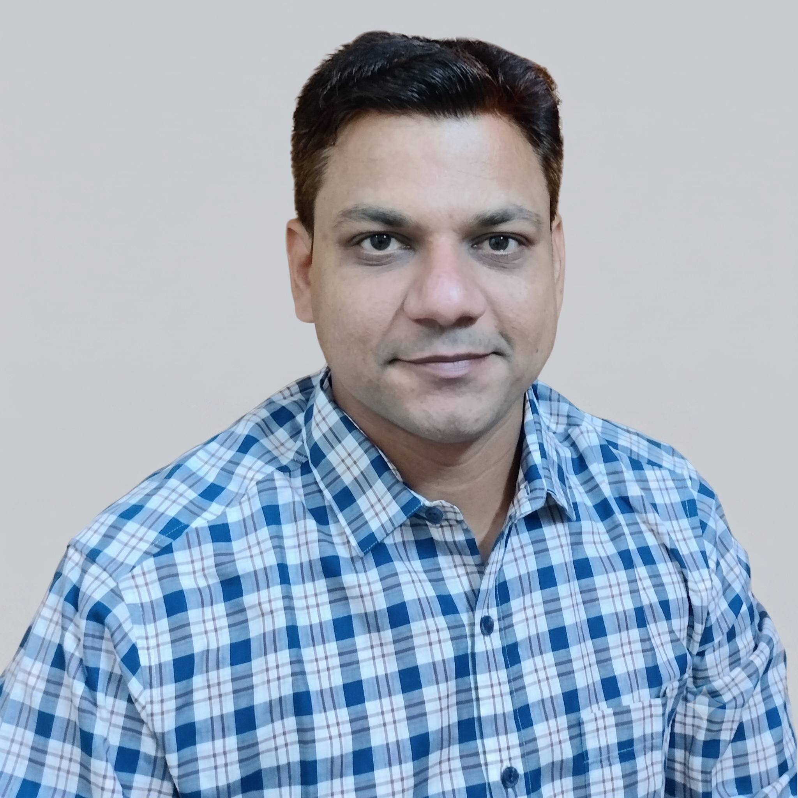

Gallery






Hello! I am a Research Fellow at the Earth Observatory of Singapore (EOS), Nanyang Technological University (NTU), working under the Climate Transformation Programme (CTP). My research focuses on understanding and modelling the physical processes and impacts of climate extremes across Singapore and the equatorial Southeast Asian region.
My work spans hydroclimate extremes drought, flood, and intense rainfall across the Global South, including the Indo-Gangetic Plains, the Hindu Kush Himalaya, and Southeast Asia. I use global and regional climate models (WRF, RegCM4) to translate uncertain projections into actionable evidence.
#I am a member of the Robust Information Task Team, WCRP RIfS, an Early Career Researcher (ECR) reviewer for IPCC AR7 (WGI), and an active reviewer for journals including Geophysical Research Letters, Climate Dynamics, Urban Climate, and Journal of Hydrology.
Email: pawan.chaubey@ntu.edu.sg · acppawan@gmail.com
Earth Observatory of Singapore · Nanyang Technological University · Singapore

* first/corresponding author
Chaubey, P. K.*, Attada, R., Switzer, A. D., Sooraj, K. P., Samanta, D., & Saini, R. (2026). Projected shifts in dry–wet extremes and possible associated drivers over the Hindu Kush Himalaya. Geomatics, Natural Hazards and Risk, 17(1). https://doi.org/10.1080/19475705.2026.2692760
Chaubey, P. K.* & Mall, R. K. (2023). Intensification of extreme rainfall in Indian River Basin: Using Bias Corrected CMIP6 Climate Data. Earth's Future, 11, e2023EF003556. https://doi.org/10.1029/2023EF003556
Chaubey, P. K.*, Mall, R. K., Srivastava, P. K. (2023). Changes in Extremes Rainfall Events in Present and Future Climate Scenarios over the Teesta River Basin, India. Sustainability, 15(5), 4668. https://doi.org/10.3390/su15054668
Chaubey, P. K.*, Mall, R. K., Jaiswal, R., & Payra, S. (2022). Spatio-temporal changes in extreme rainfall events over different Indian river basins. Earth and Space Science, AGU, 9, e2021EA001930. https://doi.org/10.1029/2021EA001930
Chaubey, P. K.*, Srivastava, P. K., Gupta, A., & Mall, R. K. (2021). Integrated assessment of extreme events and hydrological responses of Indo-Nepal Gandak River Basin. Environment, Development and Sustainability, 23, 8643–8668. https://doi.org/10.1007/s10668-020-00986-6
Chaubey, P. K.*, Kundu, A., & Mall, R. K. (2019). A geo-spatial inter-relationship with drainage morphometry, landscapes and NDVI in the context of climate change: Varuna river basin, India. Spatial Information Research, 27, 627–641. https://doi.org/10.1007/s41324-019-00264-2
Chaturvedi, M., Mall, R. K., Singh, S., Chaubey, P. K., Pandey, A. (2024). Downscaling of CMIP6-Global Climate Model and Evaluation of Heat Wave Events using Deep learning methods. International Journal of Climatology, 1–20. https://doi.org/10.1002/joc.8366
Singh, S., Mall, R. K., Singh, P. K., Bhatla, R., Chaubey, P. K. (2024). How virtuous are the bias-corrected CMIP6 models in the simulation of Heatwave over different meteorological subdivisions of India? Urban Climate. https://doi.org/10.1016/j.uclim.2024.101936
Rai, P. K., Chaubey, P. K., Mohan, K. & Singh, P. (2017). Geoinformatics for assessing the inferences of quantitative drainage morphometry of the Narmada Basin in India. Applied Geomatics, 9, 167–189. https://doi.org/10.1007/s12518-017-0191-1
Chaubey, P. K.*, Saini, R., & Attada, R. (2024). Projected Changes in Hydroclimate Extremes in Hindu Kush Himalaya: Insights from CMIP6 models. AGU Fall Meeting 2024. Link
Chaubey, P. K.* & Attada, R. (2024). Projected changes in Compound Extremes under low to high emission SSPs Scenarios. EGU General Assembly 2024, Vienna. https://doi.org/10.5194/egusphere-egu24-14265
Chaubey, P. K.* & Mall, R. K. (2022). Are Indian River Basins going to be more Flooded in Future Warming Climate? AGU Fall Meeting 2022. Link
Chaubey, P. K.* & Mall, R. K. (2022). Western shifting of Extreme Rainfall Events over the different Indian River Basins in the last 119 years. EGU General Assembly 2022, Vienna. https://doi.org/10.5194/egusphere-egu22-188
Geophysical Research Letters · Climate Dynamics · Urban Climate · Atmospheric Research · Journal of Hydrology · Environment, Development and Sustainability · Hydrological Sciences Journal · Remote Sensing in Earth Systems Sciences · Climate Change · Natural Hazard





Open to collaboration, invited talks, and conversations about hydroclimate extremes and regional climate modeling.
Email: pawan.chaubey@ntu.edu.sg / acppawan@gmail.com
Earth Observatory of Singapore
Nanyang Technological University
Singapore